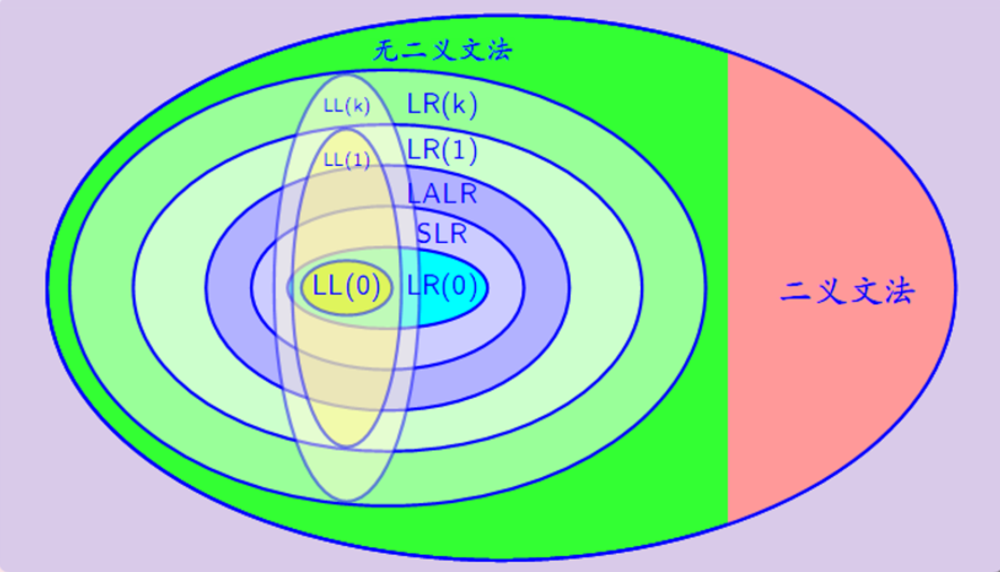

参考教材：清华大学《编译原理》第三版。
另参考：本人的编译原理老师的授课内容。
目的：梳理编译原理课程的核心知识，另一方面为了更好地备考期末。
形式：目录罗列知识结构、问答题强化知识、信息栏回忆知识。
# 第一章：概论
# 编译过程
词法分析是编译过程第一个阶段。这个阶段的任务是从左到右一个字符一个字符地输入源程序，对构成源程序的字符流进行扫描和分解，从而识别出一个个单词。
语法分析是编译过程的第二个阶段。语法分析在词法分析的基础上将单词序列分解成各类语法短语，得到抽象语法树。语法分析依据的是语言的语法规则，通过语法分析确定整个输入串是否构成一个语法上正确的程序。
语义分析审查源程序有无语义错误，为代码生成阶段收集类型信息。
中间代码生成将源程序变成一种内部表示形式，即中间代码，这是一种结构简单、含义明确的记号系统。
代码优化是对前一阶段产生的中间代码进行变换或改造，目的是使得生成的目标代码更加高效，节省时间与空间。
目标代码生成把中间代码变换成特定机器上的绝对指令代码或可重定位的指令代码或汇编指令代码，与硬件系统结构和指令含义有关。
编译过程主要有哪几个阶段？ 词法分析、语法分析、语义分析、中间代码生成、代码优化、目标代码生成。
考察编译原理的基本认识。
词法分析的输入是什么？输出是什么？ 输入是字符，输出是单词（token）序列
考察词法分析的输入和输出。
语法分析的输入是什么？输出是什么？ 输入是词法分析输出的 token 序列，输出一般是抽象语法树
考察语法分析的输入和输出。
语义分析的输入是什么？输出是什么？ 输入输出均为标识符。具体来说，输入是 token ($id, 标识符名表地址)，输出是新的 token ($id, 符号表地址)
中间代码的一种常见形式是近似 “三地址指令” 的四元式，请问四元式形式是 。
# 编译程序的结构、编译阶段的组合
编译阶段的前端：主要依赖于源语言而与目标机无关。
编译阶段的后端：依赖于目标机而一般不依赖于源语言，只与中间代码有关的那些阶段的工作。
一个编译过程可由一遍、两遍或多遍完成，一遍完成的编译过程称为单遍扫描，两遍或多遍完成的编译过程称为多遍扫描。
上述编译过程的 6 个阶段的任务可以分别由 6 个模块完成，分别称作词法分析程序、语法分析程序、语义分析程序、中间代码生成程序、代码优化程序和目标代码生成程序。此外，一个完整的编译程序还必须包括 表格管理程序和出错处理程序。
考察对编译程序的全面认识。
编译阶段的前端有哪些阶段？
考察编译阶段的前端。
某些代码优化工作也可在前端做，还包括与前端每个阶段相关的出错处理工作和符号表管理工作。编译阶段的后端主要有哪些工作？
考察编译阶段的后端。
占内存空间少，但时间消耗大的扫描方式是？
单遍扫描时间消耗小，但是占内存空间大，需要一次性存储所有信息。
# 解释程序与存储组织
解释程序一个个的获取、分析并执行源程序语句，一旦第一个语句分析结束，源程序便开始运行并且生成结果，它特别适合程序员以 交互方式 工作的情况。
程序的解释是非常慢的。
在编译阶段，存储区主要为 源程序 (中间形式) 和目标代码 开辟空间，要存放编译需要的各种 表格。在运行阶段，存储区主要是 目标代码 和 数据
对下列错误信息，请指出可能是编译的哪个阶段（词法分析、语法分析、语义分析、代码生成）报告的。
(1) else 没有匹配的 if。 语法分析
(2) 数组下标越界。语义分析
(3) 使用的函数没有定义。语法分析
(4) 在数中出现非数字字符。 词法分析语法分析通常解决匹配问题。如，使用的函数没有定义，说明没有声明部分与之匹配。又如第一题的 else 没有与 if 匹配。
跟字符有关的通常是词法分析
# 文法和语言
# 形式定义
文法 G 定义为四元组（V,Q,P,S）。其中，V 是 非终结符集；Q 是 终结符集；P 是 一组产生式；S 是 文法初始符。
终结符通常用什么表示？小写字母 非终结符通常用什么表示？大写字母
ABsa 是句子？（）
所有字符为终结符才是句子。
B->dAaui，则 dAaui 是句型？（）
句型是推导得到的符号串，可由终结符和非终结符组成。
文法描述的语言是该文法一切 句子 的集合。
# 文法类型
如果一个文法的每个产生式左部至少含一个非终结符，则这种文法是 0 型文法
0 型文法又称为短语文法。
如果一个文法的每个产生式左部只有一个非终结符，则这种文法是 2 型文法
2 型文法又称为上下文无关文法，是当前语言使用最多的文法。
如果一个文法的每个产生式的形式都是 A->aB 或 A->a，则这种文法是 正规文法
正规文法即为 3 型文法。
如果一种文法的每个产生式右部的符号个数不少于左部符号的个数，则这种文法是 1 型文法
1 型文法又称为上下文有关文法。
# 语法树
给定一个文法，其语法树唯一。（）
对于一个文法，语法树不一定唯一。
语法树结构中，根节点一定是文法开始符。（）
语法树结构中，叶结点一定是终结符。（）
叶结点可以是终结符也可以是空串。
最右推导是规范推导。（）
最右推导得到的句型称为右句型。最左推导得到的句型称为左句型。
每个句子都有最左推导和最右推导，但是每个句型不一定有最左推导和最右推导。（）
当某个文法中存在某个句子有两个不同的最左（最右）推导，则这个文法是二义的。（）
# 语法分析初步
文法的短语是文法初始符经过多步推导得到的所有子串。（）
短语中经过一步推导得到的子串称为直接短语。（）
直接短语又称为简单短语。
该文法的句柄是该文法最后一步推导得到的直接短语。（）
句柄只适用于左句型。（）
句柄只适用于右句型，因此通常用最右推导求句柄。
自顶向下语法分析方法的关键是什么？ 寻找候选式
自底向上语法分析方法的关键是什么？ 寻找句柄
规范推导的逆过程是规范规约。（）
错！规范推导的逆过程是规范归约。“归”。
闭包比正闭包多了空串。（）
值得一提的是，你需要掌握根据给定文法，使用最右推导和语法树，求某个给定句型或句子的短语、直接短语、句柄。
你需要了解的文法描述能力对比图：

很明显，从中能够看到几个特点：
（1）LL (k) 文法仅仅只能表现 LR (k) 文法的一部分。
（2）（k）一定比（k-1）的描述能力更强，毕竟较后者多一个展望符。
# 词法分析
# 词法分析与语法分析的接口方式
词法分析与语法分析的协同工作关系决定了两者之间存在接口方式的规定，最容易想到的方式是词法分析工作是独立的一遍，把字符流的源程序变为 单词序列（token），输出到一个中间文件，以供语法分析使用。
考察词法分析的输出。词法分析的输出是单词序列（token）
词法分析的接口方式还有两种，一种是词法分析程序作为语法分析程序的子程序，当语法分析程序需要一个单词时，就调用词法分析程序。还有一种是协同程序方式，词法分析程序与语法分析程序以生产者消费者的方式同步进行。你能想到的词法分析任务有哪些？如下
（1）组织源程序的输入。（2）删除注释，无用空格。（3）查填标识符名表。（4）检查词法错误。（5）记录遇到的换行符个数，以便提供词法报错信息。（6）识别单词，转换成机内表示形式，即 token 的二元式表示。
# 标识符名表
token 的机内表示方式采用二元式表示：（单词种别，单词自身值），如常数 5 的二元式是（2,'5'），其中，2 这个编码代表种类是常数，'5' 代表值。（）
所有 token 的二元式形成的表格称为标识符名表。（）
token 中，关键字、界限符、运算符的单词类别编码足以表示其完整信息，因此对于这些 token，它们二元组的单词属性值常为空。（）
标识符的 token 的二元式表示为：（标识符的类别编码，指向该标识符所在符号表中位置的指针）（）
标识符名表就是符号表。（）
标识符名表常用于词法分析，而符号表常用于语义分析。
# 正规文法和正规式
正规式又称为正则表达式，也可以认为是字符串的形式规则，这种规则能表示的所有字符串的集合称为正规集。（）
空串不是正规式。（）
一个字符也能是正规式。（）
如果 a,b 是正规式，那么 (a)、a|b、a・b、a * 也是正规式（* 表示闭包）。（）
(a|b)* 等价于 (a|b)(a|b)...(a|b)。(a*|b*) 等价于 (a|b)*。（）
如果 d 表示 0-9 中的数字，那么 dd * 可以表示空串。（）
dd * 表示至少一个数字。
若两个正规式 a 和 b 所表示的 正规集 相同，则说 a 和 b 等价。
交代一些正规式的代数规律：
（1）r|s = s|r “或” 满足交换律
（2）r|(s|t)=(r|s)|t "或" 的可结合律
（3）(rs) t=r (st) "连接" 的可结合律（“连接” 可以理解为 “与”）
（4）r (s|t)=rs|rt, (s|t) r=sr|tr 分配律
（5）r=r, r=r 是 “连接” 的恒等元素
（6）r|r=r “或” 的抽取律
（7）r**=r 幂等性
（8）r*=(r|)* 闭包一定包含空串
# 有穷自动机
有穷自动机 FA 作为一种识别装置，能准确地识别正规集。
有穷自动机分为两类：确定地有穷自动机 DFA 和不确定地有穷自动机 NFA。
一个确定的有穷自动机 DFA 可以用五元组 M 表示：M=(K,,,S,Z)。K 是 状态集。 是 输入符号表。 是 转换函数。S 是 初始状态。Z 是 终态集。
考察 DFA 的五要素。
DFA 只能有一个初始状态，但是可以有多个终态。（）
DFA 可以表示成一个状态图。其中，初态状态冠以 =>，终态用双圈表示。（）
考察 DFA 状态图。
DFA 状态图的弧上允许有空串。（）
DFA 不允许空串转换。
DFA 还可以表示成一个状态表。（）